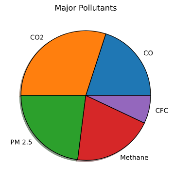

A Pie Chart is a type of graph that displays data in a circular graph.The pieces of the graph are proportional to the fraction of the whole in each category.
Or we can also say, each slice of the pie is relative to the size of that category in the group as a whole.
The entire pie represents 100% of a whole, while the slices represent portions of the whole.
Note:
To draw a pie chart with matplotlib in python we use the pie() method.
Also, a pie chart is suitable for comparing only a few categories but if there are more than a certain number of categories then a pie chart wouldn't be the best fit.
Slices are also called wedges.
Be careful, all arrays should be the same size as the array for slices.
Importing the libraries
# importing the librariesfrom matplotlib import pyplot as plt import numpy as np
Writing down the data
# writing down the data
pollutants = np.array(["CO","CO2","PM 2.5","Methane","CFC"])
slices = np.array([20,30,23,20,7])
Plotting the data
# plotting
plt.pie(slices,labels=pollutants)# the labels array provides labels to the corresponding values of the slices
plt.title("Major Pollutants")# provides a title to the plot
plt.tight_layout()# adjusts the padding
plt.show()
This plots the following pie:
Pie Chart
Adding a shadow and an edge color to the pie chart
# adding a shadow and an edge color to the chart
plt.pie(slices,labels=pollutants,shadow=True,wedgeprops={"edgecolor":"Black"}) # settiing the shadow attribute to True provides a shadow to the plot# To provide the edges with a color we need to alter the wedgeprops attribute which takes in a dictionary# {"edgecolor":"Black"} is the dictionary that we pass as a wedgeprops argument just to change the edge color of the slice or wedge
plt.title("Major Pollutants")
plt.tight_layout()
plt.show()
A plot with improved styles pops up:

Pie Chart With Edge Color And A Shadow
Exploding out a particular section of the pie
# to explode out a particular section of the pie
explode = np.array([0,0,0,0,0.25])# an array with values ranging between 0 and 1 # this decides the proportion by which the corresponding slices will explode out from the pie
plt.pie(slices,labels=pollutants,explode=explode,shadow=True,wedgeprops={"edgecolor":"Black"})
plt.title("Major Pollutants")
plt.tight_layout()
plt.show()
We get a plot with one of the wedges exploded out.
Pie Chart With A Slice Exploded Out
Adding colors of choice
# adding colors of choice
colors = np.array(["#2abdff","#3eec11","#0a34fe","#ee33dd","#eeccee"]) # array of colors for the slices
plt.pie(slices,labels=pollutants,colors=colors,explode=explode,shadow=True,wedgeprops={"edgecolor":"Black"})
# adding the percentage in the pie
plt.pie(slices,labels=pollutants,colors=colors,
explode=explode,wedgeprops={"edgecolor":"Black"},shadow=True,autopct="%1.1f%%") # autopct is the argument passed to the pie() method in order to label the slices with percentage
plt.title("Major Pollutants")
plt.tight_layout()
plt.show()
Pie slices marked with percentage
Pie Chart Labeled With Percentage
Changing the start angle of the pie
# changing the start angle of the pie
plt.pie(slices,labels=pollutants,colors=colors,
explode=explode,wedgeprops={"edgecolor":"Black"},
shadow=True,autopct="%1.1f%%",startangle=180) # setting the startangle argument makes the pie rotate to the left from the x-axis by the degree of the passed value
plt.title("Major Pollutants")
plt.tight_layout()
plt.show()
A pie with changed start angle:
Our Final Pie Plot
That's it...See you in the next tutorial...until then a H3avren style Ta-Da...